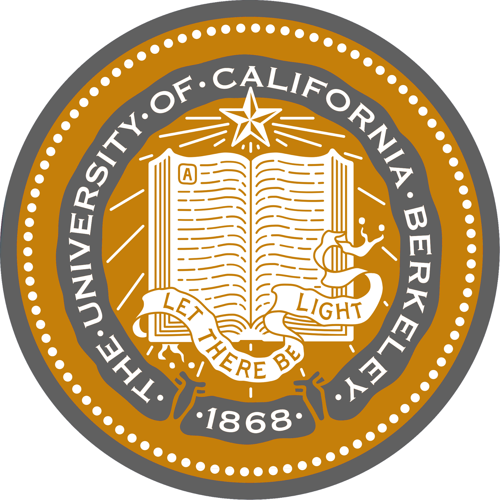
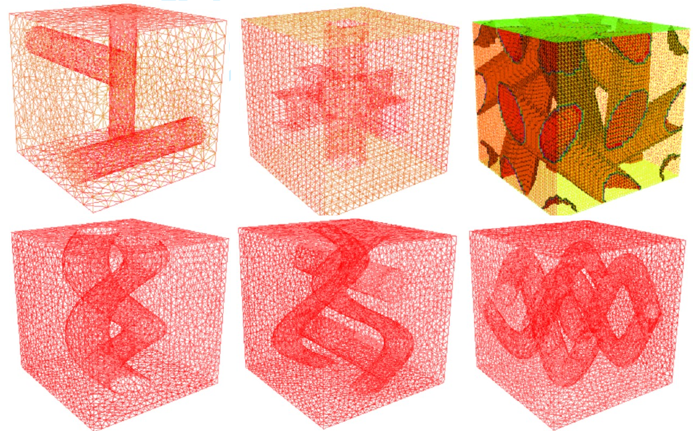
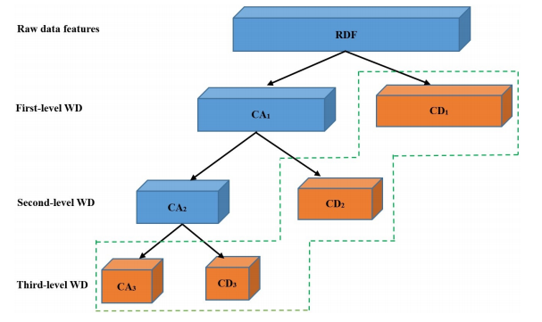
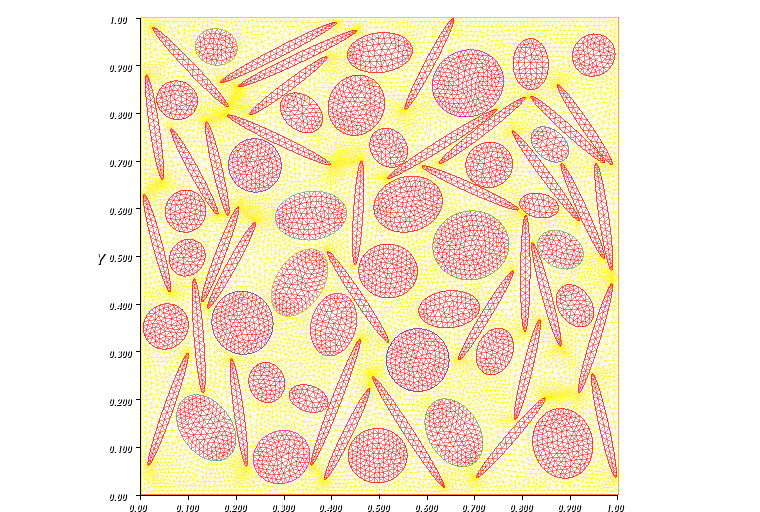

I like building AI systems that feel useful beyond demos: systems that keep the right context, use tools at the right moment, remember what matters, and improve from feedback. My recent work has been around production LLM agents, especially the engineering details that make them reliable in real-world tasks.
I currently work at Pinduoduo. Before that, I worked at Huawei, studied Mathematics and Applied Mathematics at Xidian University, and spent a year as a visiting student in EECS & STAT at UC Berkeley.
Contact: kouwenbo09 [at] gmail.com
CV /
Google Scholar /
Github
Xidian University
Aug. 2018 - Jul. 2022B.S. in Mathematics and Applied Mathematics, School of Mathematics and Statistics. GPA: 3.9/4.0.
Dean's List, 2018-2022. National Undergraduate Training Programs for Innovation and Entrepreneurship, 2019-2020.

University of California, Berkeley
Jan. 2021 - Dec. 2021Visiting student, EECS & STAT. GPA: 4.0/4.0.
Pre-sales e-commerce Agent Harness
Working on production LLM agents for e-commerce pre-sales scenarios, with a focus on harness design, context organization, tool use, inference efficiency, and evaluation.
AI assistant memory and finance knowledge graphs
Worked on long-term memory for the AI assistant Celia, and previously built data semantic knowledge graphs and intelligent analytics applications for finance scenarios.
AI video generation engine
Worked on AI video generation, including face matching and face enhancement for virtual avatar generation.
|
 |
Hao Dong,
Wenbo Kou,
Junyan Han, Jiale Linghua, Minqiang Zou, Cui, Junzhi.
Communications in Computational Physics, 2022, 31(2): 593-625.
In this paper, a novel hybrid
wavelet-learning method is developed for predicting macroscopic effective
heat transfer conductivities of braided composite materials with heterogeneous thermal conductivity.
|
|
 |
Hao Dong, Yufeng Nie, Junzhi Cui,
Wenbo Kou,
Minqiang Zou, Junyan Han, Xiaofei Guan, Zihao Yang.
Computer Methods in Applied Mechanics and Engineering, 2021, 374: 113591.
For the effective prediction of the physical parameters of random composite materials, a wavelet-machine learning hybrid method with high precision, high efficiency prediction ability and excellent anti-noise performance has been developed.
|
|
 |
Wenbo Kou,
Dong Hao, Zou Min-Qiang, Han Jun-Yan, Jia Xi-Xi.
ACTA PHYSICA SINICA, 2021, 70(3): 030701.
An innovative hybrid wavelet-based learning method assisted multiscale analysis is developed to predict the effective thermal conductivities of hybrid composite materials with heterogeneous conductivity by the asymptotic homogenization method, wavelet transform method, and machine learning method.
|
{kind=link}
{kind=link}
{kind=link}